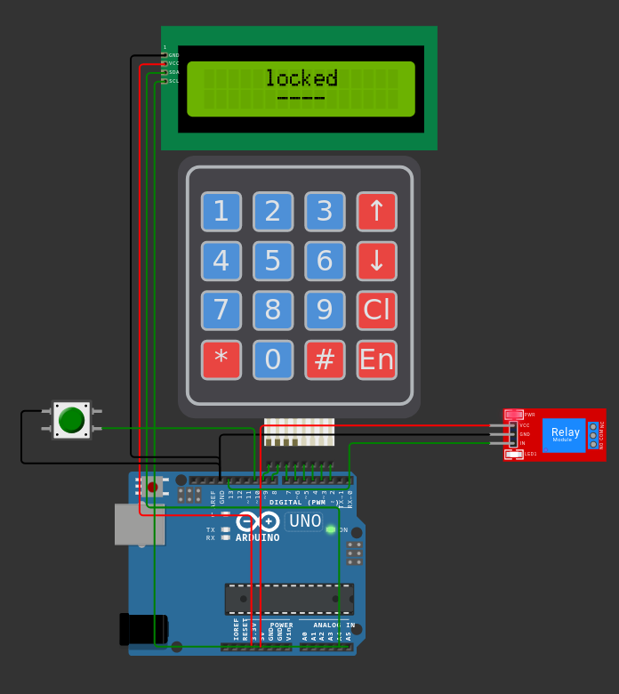
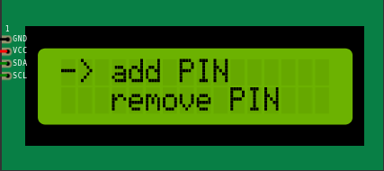
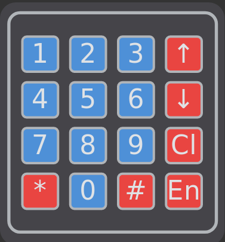

Arduino UNO lock
Table of Contents

1. Zapojení
Schéma zapojení pro Wokwi ve formátu json je dostupné v souboru diagram.json.
Potřebné součástky
- Arduino UNO
- 16x02 LCD I2C
GND -> GND, SDA -> A4, SCL -> A5, VCC -> 3.5V
- Keypad 4x4
piny 2-9
- Relay modul
IN -> pin 13, GND->GND, VCC -> 5V
- Tlačítko
pin 10 a GND
2. Použití
2.1. První zapnutí
Při prvním zapnutí je nejdřív nutné přidat první PIN, poté se otevře menu ve kterém je možné dál upravit konfiguraci.

2.2. Ovládání zámku
Cl- vyčistí zadaný vstupEn- potvrzuje zadaný vstup0-9zadá číslo- Ve stavu odemčení je možné otevřít menu klávesou
#

2.3. Ovládání v menu
En- potvrdit volbu*- uzamknout- šipky pro navigaci v menu
- menu je možné scrollovat
2.4. Funkce menu
2.4.1. Add PIN
Tato funkce umožňuje přidat další PIN pro ověření.
2.4.2. Remove PIN
Tato funkce umožňuje odstranit PIN
2.4.3. Timeout Mode
Přepíná režim uzamčení.
timeout: on- po odemčení začne odpočet, po kterém se zámek znovu uzamkne.timeout: off- po odemčení zůstane zámek odemčený dokud není ručně znovu uzamknut.
2.4.4. Set Timeout
Nastavuje dobu v sekundách, po kterou zůstane zámek odemčený.
Není potřeba vyplnit všechna pole na čísla.
2.4.5. Set PIN Len
Umožňuje zvolit jinou délku PINu. Vybrání této možnosti automaticky odstraní všechny předchozí PINy a spustí volbu nového.
2.4.6. Clear PINs
Vyčistí všechny PINy, po použití je třeba přidat alespoň jeden nový PIN.
2.4.7. Set Try Limit
Nastavuje počet pokusů před dočasným uzamčením. Nastavením na nulu je počet neomezený.
2.4.8. Fail Timeout
Nastavuje dobu v sekundách po kterou bude zámek dočasně uzamčený, je-li funkce aktivována.
2.5. Reset zámku
V případě potřeby je možné zámek vrátit do původního nastavení tlačítkem (připojené na pinu 10).
3. Implementace
3.1. Ukládání do EEPROM
Zámek automaticky ukládá svůj stav do EEPROM paměti, ze které ho při resetu opět načte. Paměť se automaticky vyčistí při úplném resetu pomocí tlačítka.
K uložení je používána funkce EEPROM.put(), nemělo by tedy docházet k přepisování paměti pokud hodnoty nebyly změněny.
Aby program zjistil zda je v paměti uložen stav zámku, přečte 32 bitů začínající z indexu 512. Pokud se hodnota přečteného uint32_t rovná 32, přečte následující paměť jako stav zámku.
3.2. Rozhraní pro programování
3.2.1. Knihovny
Všechny potřebné knihovny jsou dostupné jak na Wokwi, tak v Arduino IDE.
3.2.2. Stav zámku
Stav zámku je kompletně uložen ve struktuře state, jejíž definice vypadá takto
struct state { uint32_t _magic; // special magic number, stored for some fancy tricks! byte pin_len; // Length of PIN code byte pass_index; // number of filled passwords byte cursor_index; // cursor position on input, also the index in the menu bool wait; // timeout bool, will lock after set time if true enum states state; // lock state long timer; // used for timers long wait_ms; // time to wait before re-locking enum menu_states menu_state; // menu state selection char passwords[PASS_LIMIT][HASH_SIZE]; // valid password array bool redraw; // used to force a menu redraw, might not be necessary byte failed; // counts failed PIN attempts byte failed_max; // failed attempts before timeout long failed_wait_ms; // time to wait after x failed attempts bool failed_check; // enable or disable login timeouts char* guess; // user's current input, usually a guess };
Nejpodstatnějsí informace o aktuálním stavu jsou uložené v proměnných (enum states)state a (enum menu_states)menu_state.
Ty jsou definovány následovně:
enum states {initial, locked, unlocked, menu, timeout}; // Different menu states enum menu_states {main, add_pin, remove_pin, timeout_toggle, set_timeout, set_pin_len, clear_pins, set_fail_limit, set_fail_timeout};
Samotné stavy jsou pak přepínány pomocí speciálních funkcí uvnitř funkce loop():
switch_state(struct state* state, enum states s, byte digits = 0)
void switch_menu_state(struct state* state, enum menu_states s, byte digits = 0)
Jednoduchá definice stavu pak může vypadat například takto:
void loop() { if (state->state == locked) ... // * Login timeout state * ---------------------------------------- else if (state->state == timeout) { lcd_center("locked", lcd_rows/2-1); static char* t_str; t_str = make_countdown_str(state); lcd_center(t_str, lcd_rows/2); if (timer_done(state)) { state->failed = 0; switch_state(state, locked); return; } } // ---------------------------------------------------------------- ... }
3.2.3. Šifrování
Hesla jsou v paměti Arduina i v EEPROM šifrována jako 32bitový hash původního řetězce pomocí knihovny XxHash_arduino.
3.2.4. Velikost I2C LCD
Je možné použít LCD o jiných rozměrech, v takové situaci je ale potřeba upravit deklaraci proměnných.
const byte lcd_cols = 16; const byte lcd_rows = 2;